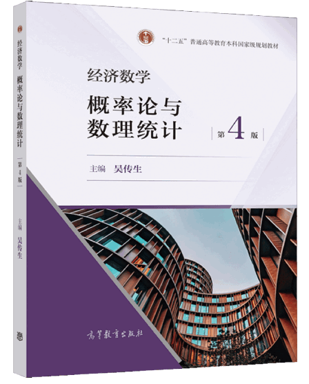

概率论与数理统计（经管）
|  |
选用教材
吴传生 主编：《经济数学 — 概率论与数理统计》，高等教育出版社，2021年11月第4版
参考文献
车荣强 主编：《概率论与数理统计》，复旦大学出版社，2015年8月第2版
赵树�� 主编：《概率论与数理统计》（修订本），人民大学出版社，2002年版
茆诗松 等主编：《概率论与数理统计》（第二版），高等教育出版社，2011年版
课程考核
最终成绩 = 期末成绩 × 50% + 平时成绩 × 50%
期末成绩：满分 100, 闭卷考试 (教考分离)
题型：填空、选择、计算、证明题和应用题等；平时成绩：满分100，考核项目与评分标准如下:
| 考核项目 | 课堂表现 | 课外作业 | 阶段测验 | 期中测验 |
| 考核次数 | 20 | 15 | 2 | 1 |
| 所占比例 | 20% | 30% | 30% | 20% |
课件下载
| 第1章 | 第2章 | 第3章 | 第4章 |
| 第5章 | 第6章 | 第7章 | 复习 |
经典习题
| 第1章 | 第2章 | 第3章 | 第4章 |
| 第5章 | 第6章 | 第7章 |
勘误信息
{概率统计习题汇编}
感谢@Lumos, @苦工, @dormant, @甜甜, @灰灰, @Lucy小路等人提供的勘误信息！
1. 概率统计习题汇编01第17题：第(1)问应为：求至少有\(1\)只蓝球的概率;
2. 概率统计习题汇编01第18题：答案应为 \(\dfrac{25}{69}\);
3. 概率统计习题汇编02第7题：密度函数中应为 \(cx^4\), 答案应为 (D) \(5\);
4. 概率统计习题汇编03第6题：联合概率密度函数应为：
\[ \begin{equation*}p(x,y)=\begin{cases}\frac{1}{2}(x+y)\mathrm{e}^{-(x+y)}, & \ x>0,y>0\newline 0, & \ \text{其它}\end{cases};\end{equation*} \]
5. 概率统计习题汇编04第15题：条件中概率分布中的 \(X\) 和 \(Y\) 的位置写反了，应该为：

6. 概率统计习题汇编03第4题：答案应为 \(7/30\);
7. 概率统计习题汇编05第7题：答案漏写，应为 \(0.9708\);
8. 概率统计习题汇编05第8题：答案应为 \(0.41\);
9. 概率统计习题汇编07第16题：极大似然估计量应为 \(\widehat{\theta} = - \dfrac{n}{\sum_{i = 1}^{n}\ln X_{i}}\).